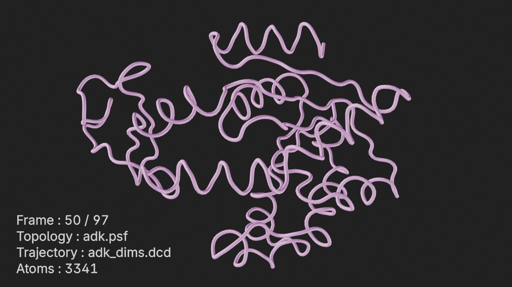
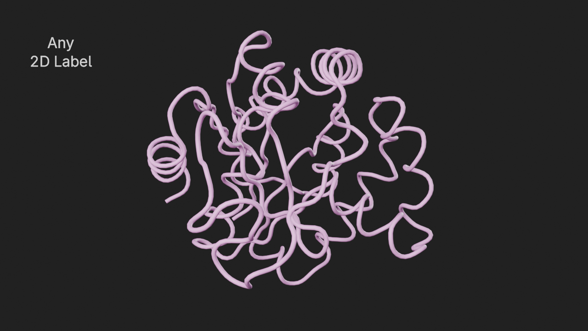
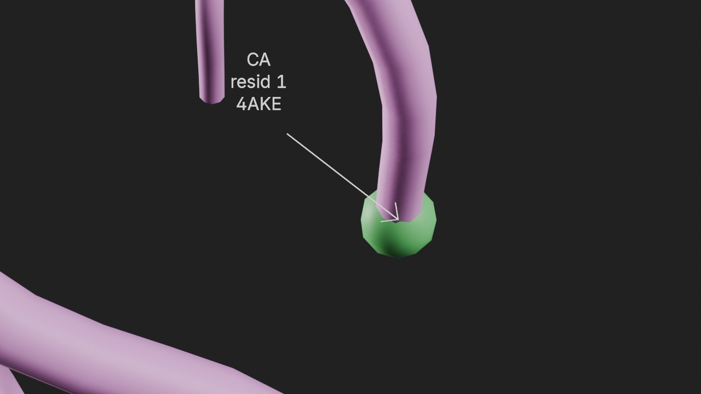

import molecularnodes as mn
import MDAnalysis as mda
from MDAnalysis.tests.datafiles import DCD, PSF, TPR, XTC
# create a canvas object
canvas = mn.Canvas()Annotations
Annotations API and Examples
Annotations API allows adding annotations to molecular entities. Molecular Nodes comes with a few bundled annotations for trajectories, but new ones can be dynamically added as well.
Setup Molecular Nodes
Add a Trajectory Entity
u = mda.Universe(PSF, DCD)
t = mn.Trajectory(u).add_style("cartoon")Adding Annotations
Annotations can be added using the add_<annotation_type> method of the annotations manager of an entity. Each entity can have different annotation types supported.
The bundled annotation types for Trajectories are:
add_atom_info()- For some basic atom infoadd_com()- For center-of-mass of a selectionadd_com_distance()- For distance between two center-of-massesadd_canonical_dihedrals()- For canonical dihedrals of a residueadd_universe_info()- For universe infoadd_label_2d()- For adding a generic 2d label in viewport / renderadd_label_3d()- For adding a generic 3d label
All selections used in the annotation APIs can be either MDAnalysis selection phrases (strings) or instances of AtomGroups.
Here is how to access the annotations manager of an entity:
# annotations manager
t.annotations<molecularnodes.entities.trajectory.annotations.TrajectoryAnnotationManager at 0x75a52d8f7cd0>Available annotation types can be seen as follows:
# available annotation types
[a for a in t.annotations.__dir__() if a.startswith("add_")]['add_atom_info',
'add_com',
'add_com_distance',
'add_canonical_dihedrals',
'add_universe_info',
'add_label_2d',
'add_label_3d']Each annotation type can have different input parameters. A common parameter name can be passed to name the annotation for easier name based lookups later. All the parameters to the add_<annotation_type> method have to be keyword params.
Annotations can be added using the add_<annotation_type> method, which returns an instance that can be used to further customize the annotation. Annotation specific inputs as well as common annotation parameters can be customized.
The function signature for adding an annotation type can be seen as follows:
t.annotations.add_atom_info.func.__signature__<Signature (self, annotation_class, /, *, selection: str | MDAnalysis.core.groups.AtomGroup = 'name CA', show_resid: bool = False, show_segid: bool = False, name: str = None) -> molecularnodes.annotations.interface.AnnotationInterface>Annotation Examples
atom_info
Display the atom info of a selection.
The input parameters for this annotation are:
selection- An MDAnalysis selection phrase orAtomGroupshow_resid- Whether to show the residshow_segid- Whether to show the segid
# add a style to display all the alpha carbons as spheres
t.add_style(
selection="name CA", style="ball_and_stick", color=(0.162, 0.624, 0.196, 1.0)
)
# add the atom_info annotation
a1 = t.annotations.add_atom_info(
selection="resid 73:78 and name CA",
show_resid=True,
show_segid=True,
name="r1 atom info"
)
# set the font size to 12
a1.text_size = 12# frame the view and render
canvas.frame_view(t.get_view("resid 73:78"), viewpoint="front")
canvas.snapshot()# hide the annotation and remove the added style
a1.visible = False
t.styles[1].remove()com
Display the center-of-mass of a selection.
The input parameters for this annotation are:
selection- An MDAnalysis selection phrase orAtomGrouptext- Text to be displayed at the center-of-mass of selection
# show com of the whole protein
a2 = t.annotations.add_com(selection="protein", text="Protein|COM", name="Protein COM")
# show com of residues 150 through 170
a3 = t.annotations.add_com(selection="resid 150:170", text="resid 150:170|COM")# frame the view and render
canvas.frame_view(t.get_view(), viewpoint="front")
canvas.snapshot()# hide the added annotations
a2.visible = False
a3.visible = Falsecom_distance
Display the distance between center-of-masses of two selections.
The input parameters for this annotation are:
selection1- An MDAnalysis selection phrase orAtomGroupof first selectionselection2- An MDAnalysis selection phrase orAtomGroupof second selectiontext1- Text to display at com of first selectiontext2- Text to display at com of second selection
# add com_distance between resid 1 and 129
a4 = t.annotations.add_com_distance(
selection1="resid 1",
selection2=u.select_atoms("resid 129"),
text1="resid 1|COM",
text2="resid 129|COM",
name="r1-129 distance",
)# frame the view and render
canvas.frame_view(t.get_view("resid 1 129"), viewpoint="bottom")
canvas.snapshot()# hide the added annotation
a4.visible = Falsecanonical_dihedrals
Display the canonical dihedrals of a residue
The input parameters for this annotation are:
resid- The residue idshow_atom_names- Whether to show the atom names in the residueshow_direction- Whether to show the direction arcs of the dihedral angles
# show canonical dihedrals of residue 200
a5 = t.annotations.add_canonical_dihedrals(resid=200)# frame the view and render
canvas.frame_view(t.get_view("resid 200"), viewpoint="back")
canvas.snapshot()# hide the added annotation
a5.visible = Falseuniverse_info
Display the universe info of the trajectory.
The input parameters for this annotation are:
location- Normalized 2d location (0.0 - 1.0) to show the info wrt viewport / rendershow_frame- Whether or not to show the frame number of the trajectoryshow_topology- Whether or not to show the topology filenameshow_trajectory- Whether or not to show the trajectory filenameshow_atoms- Whether or not to show the number of atoms in the universe
# add universe_info annotation
a6 = t.annotations.add_universe_info()# frame the view and render
canvas.frame_view(t.get_view(), viewpoint="top")
canvas.snapshot(frame=50)
# hide the added annotation
a6.visible = Falselabel_2d
Display a generic 2d label in the viewport / render.
The input parameters for this annotation are:
text- Text to displaylocation- Normalized location (0.0 - 1.0) to show the text wrt viewport / render
# show a 2d label at the top left
a7 = t.annotations.add_label_2d(text="Any|2D Label", location=(0.1, 0.8))# frame the view and render
canvas.frame_view(t.get_view(), viewpoint="left")
canvas.snapshot()
# hide the added annotation
a7.visible = Falselabel_3d
Display a generic 3d label on the universe.
The input parameters for this annotation are:
text- Text to displaylocation- 3d coordinates in universe to display text
# show the alpha carbon of resid 1 as a sphere
t.add_style(
selection="resid 1 and name CA",
style="ball_and_stick",
color=(0.162, 0.624, 0.196, 1.0),
)
# select the alpha carbon of resid 1
r1 = t.universe.select_atoms("resid 1 and name CA")
atom = r1.atoms[0]
# add a 3d label to display text at this atom's location
a8 = t.annotations.add_label_3d(text=f"CA|resid 1|{atom.segid}", location=atom.position)
# add a pointer to point at the location
a8.pointer_length = 2
a8.line_width = 2# frame the view and render
canvas.frame_view(t.get_view("resid 1"), viewpoint="front")
canvas.snapshot()
# hide the added annotation
a8.visible = False
# remove the added style
t.styles[1].remove()Accessing Annotations
Annotations added to an entity can be accessed in several different ways.
Name based access
# get the resid 1 atom info annotation by name - subscriptable
a = t.annotations["r1 atom info"]
print(a)
# get the resid 1 atom info annotation by name - get method
a = t.annotations.get("r1 atom info")
print(a)<molecularnodes.annotations.manager.AtomInfo_interface object at 0x75a52d915850>
<molecularnodes.annotations.manager.AtomInfo_interface object at 0x75a52d915850>Index based access
print("# annotations = ", len(t.annotations))
# get the protein COM annotation by index
a = t.annotations[1]
a# annotations = 8<molecularnodes.annotations.manager.COM_interface at 0x75a52d923b10>Iterable access
# access all annotations by iteration
for a in t.annotations:
print(a.name)r1 atom info
Protein COM
Annotation
r1-129 distance
Annotation.001
Annotation.002
Annotation.003
Annotation.004Controlling Visiblity
All annotations of an entity can be collectively hidden or displayed using the visible attribute of the annotations manager.
# get current annotations visibility
t.annotations.visibleTrue# hide all annotations
t.annotations.visible = False
t.annotations.visibleFalse# show all annotations
t.annotations.visible = True
t.annotations.visibleTrueCommon Annotation Params
All annotations have common params that control the display properties. These params are in addition to the annotation specific inputs.
The common annotation params are:
name- Name of the annotationvisible- Whether or not the annotation is visibletext_font- Filename of the custom font to use for texttext_color- Text color - rgba tuple like (1.0, 0.0, 1.0, 1.0)text_size- Size of the text displayedtext_alignment- Alignment of the text (center,left,right)text_rotation- Angle by which to rotate text when left alignedtext_vspacing- Vertical spacing between lines in multi line texttext_depth- Whether to enable showing text size based on depth (default: True)text_falloff- A normalized value (0.0 - 1.0) of how the text size falls off with distance from the viewport / cameraoffset_x- Text offset along the x direction (in pixels)offset_y- Text offset along the y direction (in pixels)arrow_size- Size of the arrow displayed (for lines with arrow ends)pointer_length- Length of a pointer line to draw (defaults to 0, which is no pointer)
# common annotation params for a1
[(p, getattr(a1, p)) for p in a1.__dir__() if not p.startswith("_")][('selection', 'resid 73:78 and name CA'),
('show_resid', True),
('show_segid', True),
('name', 'r1 atom info'),
('visible', False),
('text_font', ''),
('text_color',
bpy.data.objects['NewUniverseObject'].mn_annotations[0].text_color),
('text_size', 12),
('text_align', 'center'),
('text_rotation', 0.0),
('text_vspacing', 1.350000023841858),
('text_depth', True),
('text_falloff', 1.0),
('offset_x', 0),
('offset_y', 0),
('line_color',
bpy.data.objects['NewUniverseObject'].mn_annotations[0].line_color),
('line_width', 1.0),
('arrow_size', 16),
('pointer_length', 0)]Removing Annotations
Individual annotaitons can be removed using the annotation name or annotation instance.
Remove by name
# remove by an annotation name
t.annotations.remove("r1 atom info")Remove by instance
# remove by an annotation instance
t.annotations.remove(a4)Remove all annoations
# remove all annotations
t.annotations.clear()Custom Annotations
In addition to the above bundled annotations for Trajectories, custom annotation types can be created by extending the TrajectoryAnnotation class. These custom annotation types will be automatically registered and can be added using the same add_<annotation_type> method of a trajectory instance. The GUI to add and configure the annotation will also be automatically available.
Create a custom annotation
A custom trajectory annotation class has to extend TrajectoryAnnotation and implement the draw method. Optional defaults method can be used to set defaults for the annotation and a validate method that can validate inputs when they change can be implemented. The custom class will have access to the trajectory entity via self.trajectory, universe via self.trajectory.universe and the annotation params via self.interface. Please see the drawing utilities section for all the methods available to draw onto the viewport / renders from the draw code.
# Add a CutomAnnotation class
# This class will auto-register with the Trajectory entities
class CustomAnnotation(mn.entities.trajectory.TrajectoryAnnotation):
annotation_type = "custom_annotation"
selection: str # required param
bool_param: bool = False # optional bool param
# optional defaults method
def defaults(self) -> None:
# any default settings for this annotation go here
params = self.interface
# set text size to 24
params.text_size = 20
# optional validate method
def validate(self) -> bool:
# validate any input params that change (either through API or GUI)
# return True if validation succeeds else False or raise an Exception
params = self.interface
universe = self.trajectory.universe
# validate and save the selection atom group
if isinstance(params.selection, str):
# check if selection phrase is valid
# mda throws exception if invalid
self.atom_group = universe.select_atoms(params.selection)
elif isinstance(params.selection, AtomGroup):
self.atom_group = params.selection
else:
raise ValueError(f"Need str or AtomGroup. Got {type(params.selection)}")
return True
# required draw method
def draw(self) -> None:
# the draw code for this annotation
# self.trajectory points to the trajectory instance
# self.interface points to the interface that provides
# the annotation inputs and common annotation parameters
# show the atom names of the selection
for atom in self.atom_group:
self.draw_text_3d(atom.position, atom.name)Add the custom annotation
t.add_style(selection="resid 75", style="ball_and_stick")
# add the custom annotation and pass the required selection parameter
ca = t.annotations.add_custom_annotation(selection="resid 75")
ca<molecularnodes.annotations.manager.CustomAnnotation_interface at 0x75a52d934150># frame the view and render
canvas.frame_view(t.get_view("resid 75"), viewpoint="front")
canvas.snapshot()# hide the added annotation
ca.visible = FalseUnregister a custom annotation
Custom annotations get automatically registered with the TrajectoryAnnotationManager. They can be manually unregistered and re-registered using the unregister and register methods if required.
# unregister the annotation
manager = mn.entities.trajectory.TrajectoryAnnotationManager
manager.unregister(CustomAnnotation)Drawing utilities
Custom annotations can use the drawing utilities available from the base annotation class to display text or drawings in the viewport / renders.
The following utility methods are currently available:
distance- Distance between two vectorsdraw_text_2d- Draw text at a given 2D position (in pixels) of Viewportdraw_text_2d_norm- Draw text at a given 2D position (normalized co-ordinates) of Viewport.draw_text_3d- Draw text at a given 3D positiondraw_line_2d- Draw a line between two points in 2D viewport spacedraw_line_3d- Draw a line between two points in 3D spacedraw_circle_3d- Draw a circle around a 3D point in the plane perpendicular to the given normal
These methods can be used within the draw method of a custom annotation. Please see the API reference for mn.annotations.base for details about these methods.